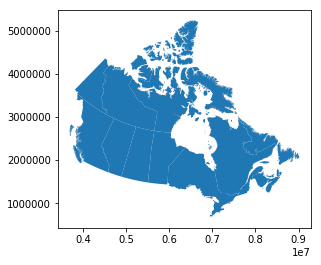
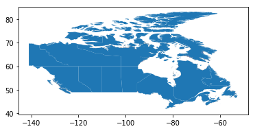
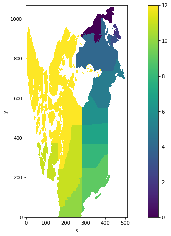
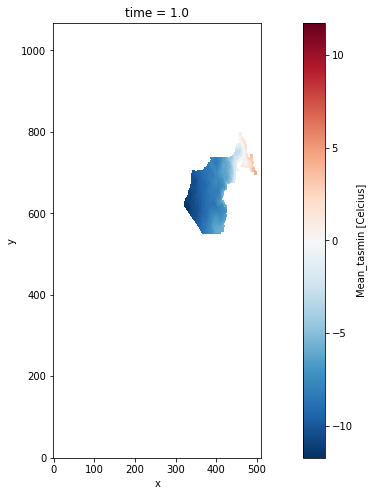
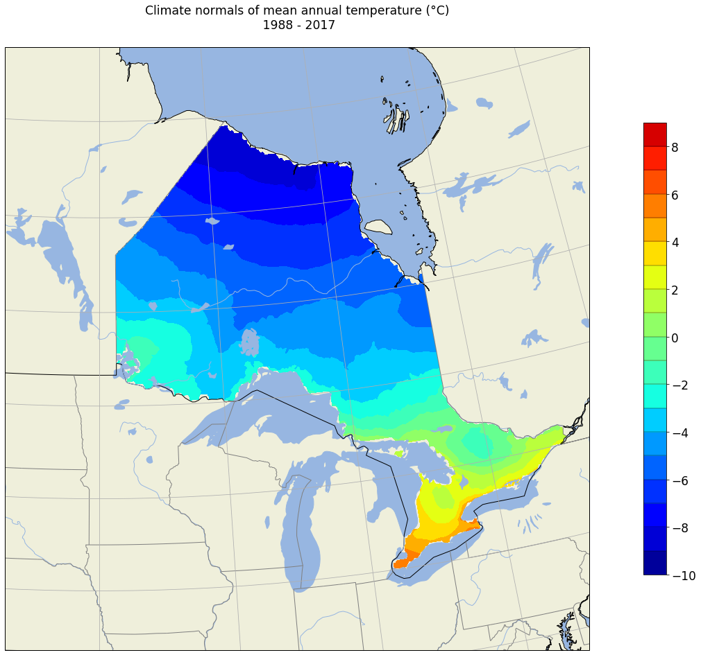

Canadian shapefile province

From shapefiles to Netcdf Mask
In this tutorial, we will use shapefiles to create masks over canadian provinces.
We will use gridded dataset ANUSPLIN meteorological data.
Agriculture and Agri-Food Canada have produced daily precipitation, minimum and maximum temperature across Canada (south of 60°N) for climate related application purpose using thin-plate smoothing splines, as implemented in the ANUSPLIN climate modeling software (Hutchinson et al., 2009; McKenney et al., 2011).
The so-called ANUSPLIN data uses ground-based observations and generates daily gridded data from 1951 to 2017 on a Lambert conformal conic projection with 5’ arc minutes spacing (equivalent to a resolution of about 10 km). The key strength of this spatial interpolation method is its global dependence on all data, permitting robust and stable determination of spatially varying dependences on elevation. Hutchinson et al. (2009) have shown that while ANUSPLIN fall month’s absolute errors were remarkably small, those of winter months were quite large due to rather difficult observation and measurement conditions.
Data are available on this link.
I will present a solution based on open-source Python modules:
- xarray: for manipulating & reading gridded data, and – very important – operate out-of-memory thanks to its dask capabilities
- numpy: for simple array manipulations
- geopandas: to open shapefiles
- osgeo:
- matplotlib: for plotting
1- First we need to import librairies and create aliases.
import xarray as xr
import numpy as np
import regionmask
import geopandas as gpd
import pandas as pd
import matplotlib.pyplot as plt
from osgeo import ogr
import warnings; warnings.filterwarnings(action='ignore')
%matplotlib inline
Working over canadian province
In this example we will use canadian province shapefiles developped by statistics canada.
Shapefiles are available on this website.
After downloaded the shapefile, we must load it using geopandas library:
PATH_TO_SHAPEFILE = './Canadian_province/lpr_000b16a_e/lpr_000b16a_e.shp'
province = gpd.read_file(PATH_TO_SHAPEFILE)
province
| PRUID | PRNAME | PRENAME | PRFNAME | PREABBR | PRFABBR | |
|---|---|---|---|---|---|---|
| 0 | 10 | Newfoundland and Labrador / Terre-Neuve-et-Labrador | Newfoundland and Labrador | Terre-Neuve-et-Labrador | N.L. | T.-N.-L. |
| 1 | 11 | Prince Edward Island / Île-du-Prince-Édouard | Prince Edward Island | Île-du-Prince-Édouard | P.E.I. | Î.-P.-É. |
| 2 | 12 | Nova Scotia / Nouvelle-Écosse | Nova Scotia | Nouvelle-Écosse | N.S. | N.-É. |
| 3 | 13 | New Brunswick / Nouveau-Brunswick | New Brunswick | Nouveau-Brunswick | N.B. | N.-B. |
| 4 | 24 | Quebec / Québec | Quebec | Québec | Que. | Qc |
| 5 | 35 | Ontario | Ontario | Ontario | Ont. | Ont. |
| 6 | 46 | Manitoba | Manitoba | Manitoba | Man. | Man. |
| 7 | 47 | Saskatchewan | Saskatchewan | Saskatchewan | Sask. | Sask. |
| 8 | 48 | Alberta | Alberta | Alberta | Alta. | Alb. |
| 9 | 59 | British Columbia / Colombie-Britannique | British Columbia | Colombie-Britannique | B.C. | C.-B. |
| 10 | 60 | Yukon | Yukon | Yukon | Y.T. | Yn |
| 11 | 61 | Northwest Territories / Territoires du Nord-Ouest | Northwest Territories | Territoires du Nord-Ouest | N.W.T. | T.N.-O. |
| 12 | 62 | Nunavut | Nunavut | Nunavut | Nvt. | Nt |
Shapes are here a GeoDataFrame containing all polygons illustrating the province boundaries.
ID_PROV = 5
print(province.PRNAME[ID_PROV])
Ontario
province.loc[:, 'geometry'].plot()
<matplotlib.axes._subplots.AxesSubplot at 0xad67400>

tmpWGS84 = province.to_crs({'proj':'longlat', 'ellps':'WGS84', 'datum':'WGS84'})
tmpWGS84.plot()
<matplotlib.axes._subplots.AxesSubplot at 0x1327ac88>

Now we can load the ANUSPLIN_10km gridded data. The parameter chunks is very important, it defines how big are the “pieces” of data moved from the disk to the memory. With this value the entire computation on a workstation with 32 GB takes a couple of minutes.
We will load all the temperature files using Xarray library.
model='ANUSPLIN_10km_YEAR_Mean_tasmoy_1950-2017'
t_in = 'J:/DONNEES_AMERIQUE_DU_NORD/ANUSPLIN_10km/Netcdf/INDICES_ANNEES/Mean_tasmoy/'
data = t_in + model + '.nc'
ds = xr.open_mfdataset(data, chunks = {'time': 10})
ds
<xarray.Dataset>
Dimensions: (time: 68, x: 510, y: 1068)
Coordinates:
lon (y, x) float32 dask.array<shape=(1068, 510), chunksize=(1068, 510)>
lat (y, x) float32 dask.array<shape=(1068, 510), chunksize=(1068, 510)>
* time (time) float64 1.0 2.0 3.0 4.0 5.0 ... 64.0 65.0 66.0 67.0 68.0
Dimensions without coordinates: x, y
Data variables:
Mean_tasmoy (time, y, x) float32 dask.array<shape=(68, 1068, 510), chunksize=(10, 1068, 510)>
Our xarray Dataset contains a single variable (Mean_tasmoy) which is stored as a dask.array. This is the result of loading files with open_mfdataset.
Now we will use regionmask module to create a gridded mask with the function regions_cls documented here.
With this function we will create an object able to mask ANUSPLIN gridded data.
province_mask_poly = regionmask.Regions_cls(name = 'PRENAME', numbers = list(range(0,13)), names = list(tmpWGS84.PRENAME), abbrevs = list(tmpWGS84.PRENAME), outlines = list(tmpWGS84.geometry.values[i] for i in range(0,13)))
province_mask_poly
13 'PRENAME' Regions ()
Newfoundland and Labrador Prince Edward Island Nova Scotia New Brunswick Quebec Ontario Manitoba Saskatchewan Alberta British Columbia Yukon Northwest Territories Nunavut
Now we are ready to apply the mask on the gridded dataset xarray ANUSPLIN.
We select only the first timestep to speed up the process.
mask = province_mask_poly.mask(ds.isel(time = 0), lat_name='lat', lon_name='lon')
mask
<xarray.DataArray (y: 1068, x: 510)>
array([[nan, nan, nan, ..., nan, nan, nan],
[nan, nan, nan, ..., nan, nan, nan],
[nan, nan, nan, ..., nan, nan, nan],
...,
[nan, nan, nan, ..., nan, nan, nan],
[nan, nan, nan, ..., nan, nan, nan],
[nan, nan, nan, ..., nan, nan, nan]])
Coordinates:
* y (y) int64 0 1 2 3 4 5 6 7 ... 1061 1062 1063 1064 1065 1066 1067
* x (x) int64 0 1 2 3 4 5 6 7 8 ... 501 502 503 504 505 506 507 508 509
lat (y, x) float32 83.45833 83.375 83.291664 ... 41.125 41.041668
lon (y, x) float32 -140.95833 -140.95833 ... -52.04167 -52.04167
mask
<xarray.DataArray (y: 1068, x: 510)>
array([[nan, nan, nan, ..., nan, nan, nan],
[nan, nan, nan, ..., nan, nan, nan],
[nan, nan, nan, ..., nan, nan, nan],
...,
[nan, nan, nan, ..., nan, nan, nan],
[nan, nan, nan, ..., nan, nan, nan],
[nan, nan, nan, ..., nan, nan, nan]])
Coordinates:
* y (y) int64 0 1 2 3 4 5 6 7 ... 1061 1062 1063 1064 1065 1066 1067
* x (x) int64 0 1 2 3 4 5 6 7 8 ... 501 502 503 504 505 506 507 508 509
lat (y, x) float32 83.45833 83.375 83.291664 ... 41.125 41.041668
lon (y, x) float32 -140.95833 -140.95833 ... -52.04167 -52.04167
Mask can be saved (for example as a NetCDF) for a later use.
mask.to_netcdf('./mask_all_province.nc')
A quick visualisation:
plt.figure(figsize=(15,8))
ax = plt.axes()
mask.plot(ax = ax)
province.plot(ax = ax, alpha = 0.8, facecolor = 'none', lw = 1)
<matplotlib.axes._subplots.AxesSubplot at 0x1b989828>

2- Extract one province
We will sho how to mask Ontario province.
ID_PROV = 5
print(province.PRNAME[ID_PROV])
Ontario
mask
<xarray.DataArray (y: 1068, x: 510)>
array([[nan, nan, nan, ..., nan, nan, nan],
[nan, nan, nan, ..., nan, nan, nan],
[nan, nan, nan, ..., nan, nan, nan],
...,
[nan, nan, nan, ..., nan, nan, nan],
[nan, nan, nan, ..., nan, nan, nan],
[nan, nan, nan, ..., nan, nan, nan]])
Coordinates:
* y (y) int64 0 1 2 3 4 5 6 7 ... 1061 1062 1063 1064 1065 1066 1067
* x (x) int64 0 1 2 3 4 5 6 7 8 ... 501 502 503 504 505 506 507 508 509
lat (y, x) float32 83.45833 83.375 83.291664 ... 41.125 41.041668
lon (y, x) float32 -140.95833 -140.95833 ... -52.04167 -52.04167
out_sel2 = ds.where(mask == ID_PROV)
out_sel2
<xarray.Dataset>
Dimensions: (time: 68, x: 510, y: 1068)
Coordinates:
* y (y) int64 0 1 2 3 4 5 6 ... 1061 1062 1063 1064 1065 1066 1067
* x (x) int64 0 1 2 3 4 5 6 7 8 ... 502 503 504 505 506 507 508 509
lon (y, x) float32 dask.array<shape=(1068, 510), chunksize=(1068, 510)>
lat (y, x) float32 dask.array<shape=(1068, 510), chunksize=(1068, 510)>
* time (time) float64 1.0 2.0 3.0 4.0 5.0 ... 64.0 65.0 66.0 67.0 68.0
Data variables:
Mean_tasmoy (time, y, x) float32 dask.array<shape=(68, 1068, 510), chunksize=(10, 1068, 510)>
Quick visualisation, we will display the first step of our DataArray masked.
For out_sel2 array :
plt.figure(figsize=(15,8))
ax = plt.axes()
out_sel2.Mean_tasmoy.isel(time = 0).plot(ax = ax)
province.plot(ax = ax, alpha = 0.8, facecolor = 'none')
<matplotlib.axes._subplots.AxesSubplot at 0x18bc95f8>

out_sel2.to_netcdf('./Ontario.nc')
import matplotlib.pylab as plt
import cartopy.crs as ccrs
import cartopy.feature as cfeature
import numpy as np
import matplotlib as mpl
from netCDF4 import Dataset, num2date
import warnings
warnings.filterwarnings("ignore")
import datetime
import xarray as xr
import pandas as pd
filename='./Ontario.nc'
nc_fid=Dataset(filename,'r')
data=nc_fid.variables['Mean_tasmoy'][:].squeeze()
lons=nc_fid.variables['lon'][:].squeeze()
lats=nc_fid.variables['lat'][:].squeeze()
data.shape
(68, 1068, 510)
Let's use Xarray to compute climatology over 1988-2017.
data_m = data[-30:,:,:]
clim_89_2017=data_m.mean(axis=0)
clim_89_2017.shape
(1068, 510)
fig=plt.figure(figsize=(28,16), frameon=True)
ax = plt.subplot(111, projection=ccrs.LambertConformal())
ax.set_extent([-100,-75,40,58])
ax.add_feature(cfeature.OCEAN.with_scale('50m')) # couche ocean
ax.add_feature(cfeature.LAND.with_scale('50m')) # couche land
ax.add_feature(cfeature.LAKES.with_scale('50m')) # couche lac
ax.add_feature(cfeature.BORDERS.with_scale('50m')) # couche frontieres
ax.add_feature(cfeature.RIVERS.with_scale('50m')) # couche rivières
coast = cfeature.NaturalEarthFeature(category='physical', scale='10m', # ajout de la couche cotière
facecolor='none', name='coastline')
ax.add_feature(coast, edgecolor='black')
states_provinces = cfeature.NaturalEarthFeature(
category='cultural',
name='admin_1_states_provinces_lines',
scale='10m',
facecolor='none')
ax.add_feature(states_provinces, edgecolor='gray')
mm = ax.contourf(lons,\
lats,\
clim_89_2017,\
vmin=-10,\
vmax=10, \
transform=ccrs.PlateCarree(),\
levels=np.arange(-10, 10, 1.),\
cmap=plt.cm.jet )
ax.gridlines()
# Define gridline locations and draw the lines using cartopy's built-in gridliner:
xticks = np.arange(-150.0,-40.0,20)
yticks =np.arange(10,80,10)
cbar.set_label(u'\n Projection = Lambert Conformal Conic \nResolution: 5 Arcs-Minutes (10 km)\nData provided by Natural Resources Canada / Created by Guillaume Dueymes', size='medium') # Affichage de la légende de la barre de couleur
cbar = plt.colorbar(mm, shrink=0.75, drawedges='True',extend='both')
cbar.ax.tick_params(labelsize=17)
plt.xlabel(u'\n\n\nTemperature / Température (°C)',size='x-large')
string_title=u'Climate normals of mean annual temperature (°C)\n 1988 - 2017\n'
plt.title(string_title, size='xx-large')
plt.savefig('./ANUSPLIN_Ontario_10km_YEAR_CLIM_1988-2017.png', bbox_inches='tight', pad_inches=0.1)
plt.show()

Guillaume Dueymes
Data Scientist and Research Assistant
My research interests include data science, data management and climate science.